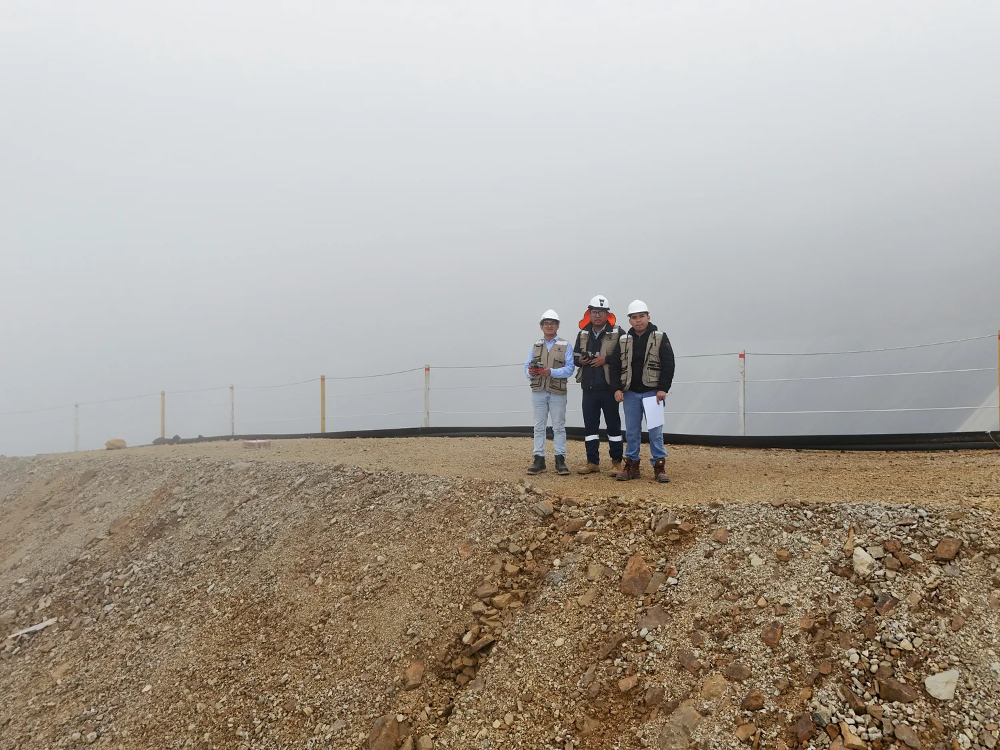
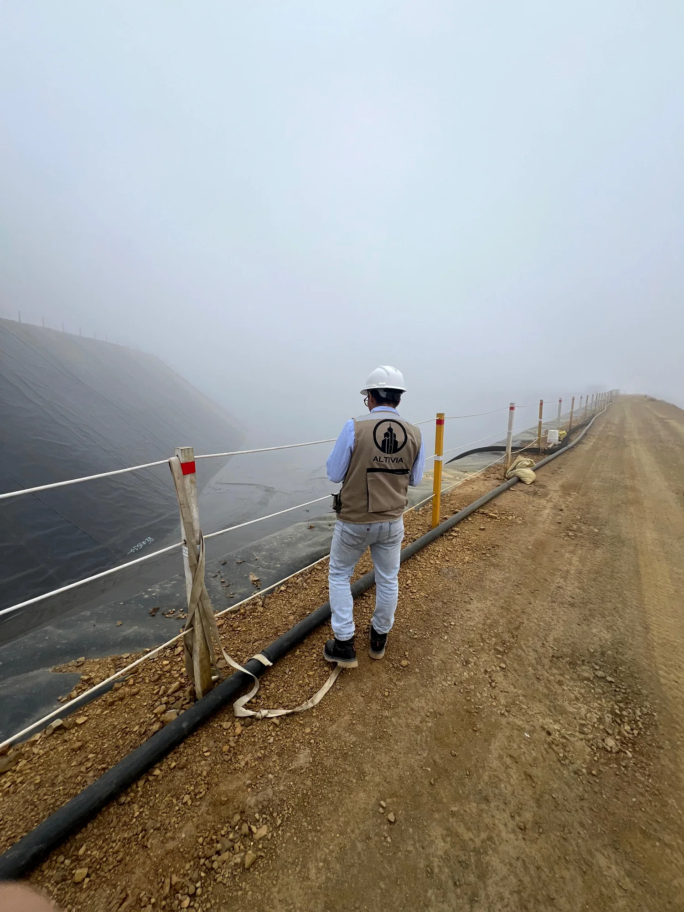

Geotecnia minera
Caracterización de materiales, evaluación de estabilidad física y análisis geotécnicos para infraestructura minera.
Ver servicioConsultoría especializada
Soluciones técnicas para proyectos mineros y de infraestructura. Desde el reconocimiento del terreno hasta el análisis y la evaluación de alternativas.
01 / Nuestra firma
Combinamos conocimiento especializado y una mirada práctica para abordar desafíos de ingeniería.
ALTIVIA desarrolla servicios de consultoría orientados al análisis geotécnico, infraestructura minera, geofísica y acompañamiento de obras, integrando revisión documental y observaciones de campo.
Conocer ALTIVIA ↗
ALTIVIA · Trabajo de campo
02 / Especialidades
Soluciones técnicas articuladas para distintas etapas de desarrollo y seguimiento de infraestructura minera.
Caracterización de materiales, evaluación de estabilidad física y análisis geotécnicos para infraestructura minera.
Ver servicioAsistencia técnica para depósitos de relaves y componentes asociados, con énfasis en estabilidad, seguimiento y gestión de riesgos.
Ver servicioExploración indirecta del subsuelo para complementar investigaciones geotécnicas y apoyar decisiones de ingeniería.
Ver servicioDesarrollo y revisión de soluciones para infraestructura, drenaje superficial y obras de protección.
Ver servicioAcompañamiento técnico en campo y verificación documental de requisitos de calidad durante la ejecución de obras.
Ver servicioComparación técnica de soluciones y configuraciones para respaldar decisiones de ingeniería en etapas tempranas.
Ver servicioNuestro enfoque
La toma de decisiones de ingeniería comienza con información pertinente, criterios verificables y una comprensión clara del contexto de cada proyecto.
03 / Galería de experiencias
 Relaves
RelavesRegistro aéreo de infraestructura minera

RelavesRegistro de campo · equipo técnico

QA/QCSupervisión de obra · instalación
Galería fotográfica de actividades técnicas. Las fichas comerciales de proyectos podrán incorporarse tras su validación.
04 / Forma de trabajo
Un enfoque que conecta trabajo de campo, análisis técnico y decisiones de proyecto.
Definimos el alcance, los antecedentes y las condiciones que deben evaluarse.
Contrastamos información, verificamos criterios y analizamos alternativas técnicas.
Presentamos recomendaciones útiles, trazables y enfocadas en el objetivo del cliente.
Conversemos
Conversemos sobre las condiciones, necesidades y alcances de tu proyecto.
Registro
Actividades relacionadas
Las fotografías representan experiencias de campo. Los alcances y referencias comerciales deberán validarse antes de su difusión pública.
Conversemos